面向 AI 生成内容（AIGC）的检索增强生成（RAG）综述
该综述系统梳理了 RAG 在 AIGC 场景中的基础范式、增强方法、跨模态应用与评测基准。论文按'检索器如何增强生成器'将 RAG 基础分为 Query-based、Latent Representation-based、Logit-based 与 Speculative 四类，并从输入、检索器、生成器、结果与整体流程五个层面归纳增强技术，如 query 转换、chunk 优化、混合检索、重排序、自适应检索与迭代 RAG。应用部分覆盖文本、代码、知识库、图像、视频、音频、3D 与科学计算，其中代码生成/补全/修复与 KBQA 与团队的知识库问答、代码辅助场景直接对应。评测上汇总了 Noise Robustness、Faithfulness 等维度及 RAGAS、ARES、TruLens、CRUD-RAG 等基准，并指出 query-based RAG 拉长上下文、检索质量差引发幻觉等局限。核心结论：RAG 以易更新的非参数化知识库解决知识陈旧、长尾缺失与数据泄露问题，长上下文模型不会取代 RAG。
AIGC 尽管取得显著成功，仍面临知识更新滞后、长尾知识缺失、训练数据泄露风险以及高训练/推理成本等障碍；同时已有 RAG 综述或只关注单一基础范式、或只覆盖文本模态，缺乏对 RAG 基础、增强方法与跨模态应用的系统性梳理，阻碍了该领域发展。论文旨在提供统一视角的全面综述。
提出按'检索器如何增强生成器'划分的四类 RAG 基础范式：Query-based（检索结果拼入生成器输入/prompt）、Latent Representation-based（检索内容作为隐表示融合，如 FiD、RETRO）、Logit-based（解码时在 logits 层面融合，如 kNN-LM）、Speculative RAG（用检索替代部分生成以节省资源与加速，如 REST、GPTCache）。在此基础上从五个层面归纳增强方法：输入增强（Query2doc/HyDE 等 query 转换、数据增强）、检索器增强（递归检索、chunk 优化如 RAPTOR、检索器微调、混合检索、重排序、检索转换）、生成器增强（提示工程如 LLMLingua 压缩与 CoT 提示、解码调优、生成器微调）、结果增强（输出改写）与 RAG 流程增强（基于规则/模型的自适应检索、迭代 RAG 如 RepoCoder）；随后按模态综述应用并汇总评测基准与未来方向。
未在论文中说明
区别于已有综述只聚焦文本 RAG 或单一范式（如 Gao et al. 仅讨论 query-based RAG 的增强、Zhao et al. 覆盖多模态应用但忽略 RAG 基础），本文首次将所有 RAG 场景统一抽象为四类增强基础，并同时系统覆盖基础、增强、跨模态应用、基准与局限，强调 Query-based 之外的 Latent/Logit/Speculative 范式的潜力。
相关度级别：high
命中能力域：3.1 上下文工程与记忆 | 3.2 提示工程 | 3.5 评测与可靠使用
理由：RAG/检索增强是能力域 3.1 明确列出的核心技术，本综述对 RAG 基础范式与增强方法做了系统分类，可直接作为团队搭建知识库问答、代码辅助等场景中上下文组织与检索流水线的方法地图；Query-based RAG 本质是提示增强，文中归纳的 query 转换（HyDE、Query2doc）、prompt 压缩（LLMLingua）、CoT 提示等对应 3.2 域；Benchmark 章节的鲁棒性/忠实度评测维度与 RAGAS、ARES、TruLens 等框架对应 3.5 域的评测保障；自适应检索与 GPTCache 语义缓存等涉及成本与效率优化，同样落在 3.5。论文不涉及模型训练，与团队'用好模型'的定位完全一致。
建议动作：深入精读并做内部分享
arXiv:2402.19473v6 [cs.CV] 2024年6月21日
面向人工智能生成内容的检索增强生成：综述
∗ ∗
Penghao Zhao, Hailin Zhang, Qinhan Yu, Zhengren Wang, Yunteng Geng, Fangcheng Fu†, Ling Yang, Wentao Zhang†, Jie Jiang, Bin Cui†
摘要—模型算法的进步、基础模型的壮大以及高质量数据集的可获取性，推动了人工智能生成内容（AIGC）的演进。尽管取得了显著成功，AIGC 仍面临诸多障碍，例如知识更新、长尾数据处理、数据泄露缓解以及高昂的训练与推理成本管理。检索增强生成（RAG）近来作为一种应对此类挑战的范式而兴起。具体而言，RAG 引入了信息检索过程，通过从可用数据存储中检索相关对象来增强生成过程，从而带来更高的准确性和更好的鲁棒性。本文全面综述了将 RAG 技术融入 AIGC 场景的现有工作。我们首先根据检索器增强生成器的方式对 RAG 基础进行分类，提炼出面向各类检索器与生成器的增强方法的基本抽象。这一统一视角涵盖了所有 RAG 场景，揭示了有助于未来潜在发展的进展与关键技术。我们还总结了 RAG 的额外增强方法，以促进 RAG 系统的有效工程化与实现。随后，我们从另一个视角出发，综述了 RAG 在不同模态与任务中的实际应用，为研究人员和从业者提供了有价值的参考。此外，我们介绍了 RAG 的基准测试（benchmark），讨论了当前 RAG 系统的局限性，并对未来研究的潜在方向提出了建议。Github：https://github.com/PKU-DAIR/RAG-Survey。
索引术语—检索增强生成、AI 生成内容、生成模型、信息检索。
近年来，人工智能生成内容（AIGC）领域的关注度急剧攀升。人们精心打造了各式各样的内容生成工具，以在多种模态上产生多样化的输出，例如用于文本和代码的大型语言模型（LLMs），包括 GPT 系列 [1]- [3] 与 LLAMA 系列 [4]-[6]；用于图像的 DALLE [7]-[9] 和 Stable Diffusion [10]；以及用于视频的 Sora [11]。"AIGC"一词强调，这些内容是由先进的生成模型产生的，而非出自人类或基于规则的方法。得益于新型模型算法的运用、基础模型爆炸式的规模以及海量高质量数据集，这些生成模型取得了卓越的性能。具体而言，序列到序列任务已从采用长短期记忆（LSTM）网络 [12] 转向基于 Transformer 的模型 [13]，图像生成任务也从生成对抗网络（GANs）[14] 转向了潜在扩散模型（LDMs）[10]。值得注意的是，基础模型的架构最初由数百万个参数构成 [15], [16]，如今已增长到数十亿乃至数万亿个参数 [1], [4], [17]。丰富的高质量数据集 [1], [18] 的可得性进一步助推了这些进展，它们提供了充足的训练样本，使模型参数得以充分优化。
∗ 两位作者对本研究的贡献相同。
† 通讯作者。
· Penghao Zhao、Hailin Zhang、Qinhan Yu、Zhengren Wang、Yunteng Geng、Fangcheng Fu、Ling Yang、Wentao Zhang 和 Bin Cui 就职于北京大学（电子邮件：penghao.zhao@stu.pku.edu.cn, z.hl@pku.edu.cn, yuqinhan@stu.pku.edu.cn, wzr@stu.pku.edu.cn, 1800012997@pku.edu.cn, ccchengff@pku.edu.cn, yangling0818@163.com, wentao.zhang@pku.edu.cn, bin.cui@pku.edu.cn）。
· Jie Jiang 就职于腾讯公司（电子邮件：zeus@tencent.com）。
信息检索是计算机科学领域的另一项关键应用。与生成不同，检索旨在从庞大的资源池中定位相关的既有对象。检索最普遍的应用是网络搜索引擎，其主要聚焦于文档检索任务 [19], [20]。在当今时代，高效的信息检索系统能够处理数十亿量级的文档集合 [21], [22]。除文档之外，检索还被应用于许多其他模态 [23]-[26]。
尽管生成模型取得了显著进展，AI 生成内容（AIGC）仍然面临诸多挑战，例如知识过时、缺乏长尾知识 [27]，以及泄露私有训练数据的风险 [28]。检索增强生成（RAG）旨在利用其灵活的数据存储库来缓解这些问题 [29]。可检索的知识充当非参数化记忆，它易于更新，能够容纳广泛的长尾知识，并且可以编码机密数据。此外，检索能够降低生成成本。RAG 可以缩减大模型的规模 [30]、支持长上下文 [31]，并省去某些生成步骤 [32]。
典型的 RAG 流程如图 1 所示。给定输入查询，检索器识别相关的数据源，检索到的信息与生成器交互，以改进生成过程。根据检索结果增强生成的方式不同，存在若干基础范式（简称 foundations）：它们可以作为增强输入提供给生成器 [33], [34]；它们可以在生成的中间阶段以潜在表示的形式加入 [35], [36]；它们可以以 logits 的形式对最终生成结果做出贡献 [37], [38]；它们甚至可以影响或省略某些生成步骤 [32], [39]。此外，研究人员提出了各种增强方法来改进基础的 RAG 流程。这些方法既包括针对单个组件的特定优化，也包括针对整个流水线的整体性增强。
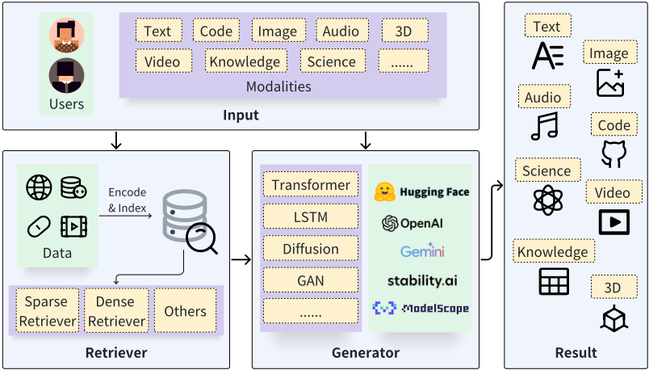
此外，虽然 RAG 的概念最初出现在文本到文本生成中 [34]，但该技术已在众多领域得到应用，包括代码 [40]-[42]、音频 [43], [44]、图像 [45]-[47]、视频 [48], [49]、3D [50], [51]、知识 [52]-[54] 以及 AI for Science [55], [56]。特别地，RAG 的核心思想与流程在不同模态之间大体一致。然而，它需要在增强技术方面进行细微调整，且检索器与生成器的选择会因具体的模态和应用而有所不同。
尽管近年来关于 RAG 的研究迅速增长、应用蓬勃发展，但涵盖所有基础、增强与应用的系统性综述却明显缺失，阻碍了该领域的发展。一方面，缺乏对 RAG 基础的讨论显著削弱了该领域研究的实用价值，使 RAG 的潜力未能得到充分挖掘。尽管大多数研究兴趣（尤其是在大语言模型（LLM）研究者中）集中于文本生成任务中基于查询的 RAG，但必须认识到，其他 RAG 基础同样有效，并在使用和进一步发展方面具有巨大潜力。另一方面，缺乏对 RAG 应用的概述导致研究人员和从业者忽视 RAG 在多种模态上的进展，且不了解如何有效地应用 RAG。尽管文本生成通常被视为 RAG 的主要应用，我们强调，RAG 在其他模态中的发展也已开始兴起，并取得了富有前景的进展。某些模态与检索技术有着深厚的历史渊源，为 RAG 注入了独特的特性。受此启发，本文旨在呈现一篇全面的综述，为 RAG 提供系统性概述。
本综述对 RAG 进行了全面的概述，涵盖基础、增强、应用、基准测试、局限性以及潜在的未来方向。尽管检索器与生成器在不同模态和任务中存在差异，我们提炼出 RAG 基础的核心原则，并将各类应用视为对这些原则的适配。我们旨在为研究人员和从业者提供参考与指南，为推进 RAG 方法论及相关应用提供有价值的见解。总之，我们将本文的贡献列举如下：
随着 RAG 领域的不断发展，已涌现出若干综述；然而它们仅涉及该领域的某些特定方面。具体而言，这些综述要么仅聚焦于单一的 RAG 基础，要么仅针对有限场景对 RAG 增强方法进行了简要概述。
现有工作大多聚焦于由大语言模型（LLMs）所支持的文本相关 RAG 任务，而未对其他模态进行深入探究。Li 等人 [57] 的综述对 RAG 进行了基础性概述，并讨论了文本生成任务范围内的具体应用。类似地，Asai 等人 [58] 撰写的教程以基于检索的语言模型为中心，详细介绍了其结构与训练策略。与此同时，Gao 等人 [59] 近期发表的综述探讨了 LLMs 语境下的 RAG，尤其侧重于基于查询的 RAG 的增强方法。认识到 RAG 已扩展至文本领域之外，我们的工作将其覆盖范围拓展至整个 AI 生成内容（AIGC）领域，从而对 RAG 研究实现更全面的覆盖。
此外，Zhao 等人 [60] 提出的另一篇综述介绍了跨多种模态的 RAG 应用，但忽略了对 RAG 基础的讨论。另一项工作 [61] 仅涵盖了其他模态中的部分工作。尽管现有研究已从多个方面对 RAG 进行了探索，但仍需要一篇全面涵盖 RAG 基础、增强方法及其在不同领域适用性的综述。在本文中，我们旨在通过提供对 RAG 的系统性综述来填补这一空白。
本文其余部分的组织结构如下：第 II 节详细阐述 RAG 的基础知识，介绍检索器（retriever）与生成器（generator）；第 III 节介绍 RAG 的基础以及对 RAG 的进一步增强；第 IV 节综述了 RAG 在各类应用中的现有研究；第 V 节研究了 RAG 的基准测试（benchmark）框架；第 VI 节讨论了 RAG 目前的局限性以及潜在的未来方向；最后，第 VII 节对全文进行总结。
在本节中，我们概述了通用的 RAG 架构，并探讨当今基于 RAG 的 AIGC 中的生成器与检索器。
如图 1 所示，整个检索增强生成（RAG）系统由两个核心模块组成：检索器和生成器，其中检索器从数据存储中搜索相关信息，生成器则生成所需的内容。RAG 的流程展开如下：（i）检索器首先接收输入查询并搜索相关信息；（ii）随后，原始查询和检索结果通过特定的增强方法被送入生成器；（iii）最后，生成器产生预期的结果。
生成式人工智能在各类任务中的卓越表现开启了人工智能生成内容（AIGC）的时代。生成模块在 RAG 系统中扮演着至关重要的角色。不同的生成模型被应用于不同的场景，例如用于文本到文本任务的 Transformer 模型、用于图像到文本任务的 VisualGPT [62]、用于文本到图像任务的 Stable Diffusion [10]、用于文本到代码任务的 Codex [2] 等。在此我们介绍 RAG 中经常使用的 4 种典型生成器：Transformer 模型、LSTM、扩散模型和 GAN。
1) Transformer 模型：Transformer 模型是自然语言处理（NLP）领域中性能最佳的模型之一，由自注意力机制、前馈网络、层归一化模块和残差网络组成 [63]。如图 2 所示，最终输出序列是通过对由分词和嵌入得到的潜在表示序列，在每个生成步骤执行词表分类而产生的。
2) LSTM：如图 2 所示，长短期记忆网络（LSTM）[64] 是循环神经网络（RNN）模型的一种特殊形式。它通过引入细胞状态和门控机制，解决了长期依赖处理中的梯度爆炸/梯度消失问题。该模型由三个用于过滤信息的门（输入门、遗忘门和输出门）以及一个用于保留和管理信息的中央细胞状态（Cell State）模块组成。它采用与 Transformer 模型相同的词表分类方法，以自回归方式生成输出。
3) 扩散模型：扩散模型是一类深度生成模型，能够创建逼真且多样的数据样本（包括图像、文本、视频、分子等）[65]。如图 2 所示，扩散模型的工作方式是逐步向数据添加噪声，直到数据变成随机噪声，然后逆转这一过程，从噪声中生成新数据。该过程基于概率建模和神经网络。
4) GAN：生成对抗网络（GAN）[14] 是备受瞩目的深度学习模型，能够模拟并生成逼真的图像、音频及其他数据 [66]。如图 2 所示，典型的 GAN 由两个主要组件构成：生成器和判别器。这两个部分通过对抗学习相互竞争，使生成器能够不断提升其生成逼真样本的能力，而判别器则不断提升其区分真假样本的能力。
检索（retrieval）是指在给定信息需求的情况下识别并获取相关信息。具体而言，我们可以将信息资源概念化为一个键值存储（key-value store），其中每个键对应一个值（键与值可以相同）。给定一个查询，目标是使用相似度函数搜索最相似的 topk 个键，并获取与之配对的值。根据相似度函数的不同，现有的检索方法可以分为稀疏检索（sparse retrieval）、稠密检索（dense retrieval）以及其他类型。在广泛使用的稀疏检索和稠密检索中，整个过程可以划分为两个不同的阶段：(i) 首先将每个对象编码为特定的表示；然后 (ii) 构建索引来组织数据源，以实现高效搜索。
1) 稀疏检索器（Sparse Retriever）：稀疏检索方法常用于文档检索，其中键/值表示待搜索的文档。这些方法利用诸如 TF-IDF [67]、查询似然（query likelihood）[68] 和 BM25 [19] 等词项匹配度量，通过分析文本中的词统计信息并构建倒排索引（inverted index）来实现高效搜索。从本质上讲，BM25 是大规模网页搜索中的一个强基线，它融合了逆文档频率权重、查询词元出现次数以及其他相关度量。
4
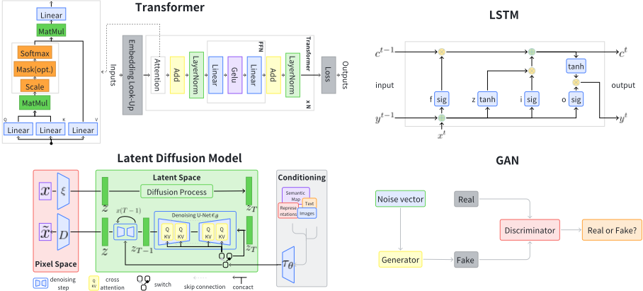
为了实现高效搜索，稀疏检索通常利用倒排索引来组织文档。具体来说，查询中的每个词项都会执行一次查找以获得候选文档列表，随后根据统计得分对这些文档进行排序。
2) 稠密检索器（Dense Retriever）：与稀疏检索不同，稠密检索方法使用稠密嵌入向量来表示查询和键，并构建近似最近邻（ANN）索引以加速搜索。该方法可应用于所有模态。对于文本数据，预训练模型（如 BERT [15]）的最新进展已被用于分别编码查询和键 [20]。这种方法通常被称为稠密段落检索（DPR）。与文本类似，已有模型被提出用于编码代码数据 [25]、音频数据 [69]、图像数据 [24]、视频数据 [70] 等。稠密表示之间的相似度得分通常采用余弦、内积、L2 距离等度量来计算。
在训练阶段，稠密检索使用对比学习（contrastive learning）来增大正样本之间的相似度，并减小负样本之间的相似度。已有若干难负样本（hard negative）技术 [71] 被提出，以进一步提升模型质量。为了在推理阶段实现高效搜索，则需要采用 ANN 方法。目前已开发了多种索引来支持 ANN 搜索，包括树索引 [72], [73]、局部敏感哈希（locality sensitive hashing）[74]、邻居图索引（例如 HNSW [75]、DiskANN [76]）以及图与倒排相结合的索引（例如 SPANN [22]）。
3) 其他方法：除了稀疏检索和稠密检索之外，还存在其他用于检索相关对象的方法 [77], [78]。一些研究工作不计算表示，而是直接使用自然语言文本之间的编辑距离 [79] 或代码片段的抽象语法树（AST）[80], [81]。在知识图谱中，实体通过关系相互连接，充当检索的预构建索引。因此，利用知识图谱的 RAG 方法可以采用 k 跳邻居搜索进行检索 [82], [83]。另一种检索方法是命名实体识别（NER）[84]，其中查询作为输入，实体充当键。
在本节中，我们首先介绍 RAG 的基础范式，然后概述进一步提升有效性的增强方法。
根据检索器增强生成器的方式，我们将 RAG 的基础分为 4 类，如图 3 所示。
1) 基于查询的 RAG（Query-based RAG）：源于提示增强的思想，基于查询的 RAG 将用户的查询与检索所得信息中的洞见无缝整合，并直接馈入生成器输入的初始阶段。该方法在 RAG 应用中十分普遍。检索完成后，所获得的内容与用户的原始查询合并形成复合输入，随后由生成器处理以生成响应。基于查询的 RAG 被广泛应用于各种模态。
在文本生成方面，REALM [33] 采用双 BERT 框架来简化知识检索与整合，将预训练模型与知识提取器相结合。Lewis 等人 [34] 利用 DPR 进行信息检索，并采用 BART 作为生成器，有效增强了生成效果。SELF-RAG [85] 利用评判模块来判断是否需要检索。除了与本地生成器兼容之外，基于查询的 RAG 还适用于通过 API 调用使用大语言模型（LLM）的场景。REPLUG [86] 遵循这一方法，将语言模型视为“黑盒”，并有效地将相关外部文档整合到查询中。In-Context RALM [87] 使用 BM25 进行文档检索，并训练一个预测性重排序器来对排名靠前的文档进行重排序与整合。
5
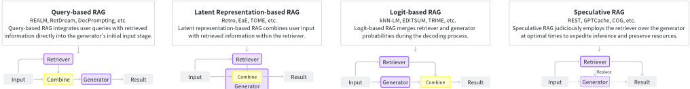
在代码领域，若干工作 [42]、[88]-[91] 利用基于查询的范式将来自文本或代码的上下文信息融入提示中，从而提升了下游任务的有效性。
[96] 将 k 近邻（kNN）搜索集成到 transformer 块中，实现了输入分块，并从理论上解决了 Transformer 模型长期备受诟病的上下文长度限制问题。Kuratov 等人 [97] 将 Transformer 与 RNN 相结合，利用模型的中间输出作为检索内容。
知识库问答（KBQA）领域的最新研究也展示了检索与语言模型相结合的显著效果。例如，Uni-Parser [92]、RNG-KBQA [82] 和 ECBRF [93] 通过将查询与检索到的信息合并到提示中，有效提升了问答（QA）系统的性能与准确性。
在 AI for Science 领域，Chat-Orthopedist [94] 辅助特发性脊柱侧凸青少年的共同决策，通过将检索到的数据融入模型提示，提升了 LLM 的有效性与信息精确度。
在图像生成任务中，RetrieveGAN [45] 通过将检索到的数据（如选定的图像块及其边界框）融入生成器的输入阶段，提升了生成图像的相关性与精确度。IC-GAN [95] 通过将噪声向量与实例特征拼接，调控生成图像的特定条件与细节。
在视频描述生成（video captioning）方面，R-ConvED [48] 使用卷积编码器-解码器网络，结合注意力机制处理检索到的视频-句子对，生成隐状态以产生描述。CARE [117] 引入概念检测器来产生概念概率，并将概念表示融入混合注意力机制中。
EgoInstructor [49] 使用门控交叉注意力（gated-cross attention）融合文本与视频特征，提升了自我中心视频（egocentric videos）描述的相关性与连贯性。基于潜在表示的 RAG 可适用于多种模态与任务，它将检索器与生成器的隐状态相融合，但需要额外的训练来对齐潜在空间。它使得开发能够无缝融入检索信息的复杂算法成为可能。
3) 基于 Logit 的 RAG：在基于 Logit 的 RAG 中，生成模型在解码过程中通过 logit 整合检索信息。通常，这些 logit 通过简单求和或通过模型加以组合，以计算逐步生成的概率。
6
在文本领域，kNN-LM [37] 及其变体 [38] 在每个解码步骤中将语言模型概率与由相似前缀的检索距离得到的概率相融合。TRIME [118] 和 NPM [119] 是传统 kNNLM 方法的激进演进，它们使用本地数据库中紧密对齐的词元作为输出，在长尾分布场景中尤其能提升性能。
除文本之外，代码和图像等其他模态也利用了基于 Logit 的 RAG。
在代码领域，若干研究 [80], [120] 也采用了 kNN 的概念来增强对最终输出的控制，从而取得了更优的性能。此外，EDITSUM [98] 通过在 logit 层面整合原型摘要来提升代码摘要的质量。在图像描述生成方面，MA [121] 直接将 kNN-LM 框架应用于图像描述问题，取得了良好的效果。总而言之，基于 Logit 的 RAG 利用历史数据推断当前状态，并在 logit 层面融合信息，非常适合序列生成。它侧重于生成器的训练，并为未来任务中充分利用概率分布的新型方法提供了可能。
4) 投机式 RAG（Speculative RAG）：投机式 RAG 寻求以检索替代纯生成的机会，旨在节省资源并加快响应速度。REST [32] 用检索替代投机解码（speculative decoding）[122] 中的小模型，从而实现草稿的生成。GPTCache [39] 通过构建用于存储大语言模型（LLM）响应的语义缓存，解决了使用 LLM API 时延迟过高的问题。COG [123] 将文本生成过程分解为一系列复制粘贴操作，从文档中检索词语或短语，而非进行生成。Cao 等人 [124] 提出了一种新范式，消除了最终结果对第一阶段检索内容质量的依赖，用直接检索到的短语级内容替代生成。
总之，投机式 RAG 目前主要适用于序列数据。它将生成器与检索器解耦，使预训练模型能够直接作为组件使用。在这一范式下，我们可以探索更广泛的策略来有效利用检索到的内容。
在本节中，我们介绍用于提升已构建 RAG 系统性能的方法。我们根据增强目标将现有方法分为 5 类：输入、检索器、生成器、结果以及整个流程。
1) 输入增强：输入是最初馈入检索器的内容，对检索阶段的最终结果有显著影响。在本节中，我们介绍两种输入增强方法：查询转换和数据增强。
查询转换：查询转换通过修改输入查询来提升检索结果。
Query2doc [125] 和 HyDE [126] 利用原始查询生成伪文档，随后将该伪文档用作检索查询。伪文档包含更丰富的相关信息，有助于检索到更准确的结果。TOC [127] 利用检索到的内容将模糊查询分解为多个清晰的子查询，再将这些子查询发送给生成器并聚合以产生最终结果。对于复杂或模糊的查询，RQ-RAG [128] 将其分解为清晰的子查询以进行细粒度检索，并综合各响应，为原始查询提供连贯的答案。Tayal 等人 [129] 利用动态少样本示例和上下文检索对初始查询进行精化，增强了生成器对用户意图的把握。
数据增强：数据增强在检索之前对数据进行改进，包括去除无关信息、消除歧义、更新过时文档、合成新数据等技术。
Make-An-Audio [44] 使用字幕生成与音频-文本检索为无语言标注的音频生成字幕，以缓解数据稀疏问题，并通过添加随机概念音频来改进原始音频。LESS [130] 通过分析梯度信息为下游任务优化数据集选择，旨在提升模型响应指令提示的性能。ReACC [91] 采用数据增强（包括重命名和死代码插入）来预训练代码检索模型。Telco-RAG [131] 通过应用“3GPP 规范词汇表”（Vocabulary for 3GPP Specifications）提升检索准确率，并利用路由模块将其与用户查询进行匹配。
2) 检索器增强：在 RAG 系统中，检索内容的质量决定了馈入生成器的信息。较低的内容质量会增加模型产生幻觉或其他性能退化的风险。在本节中，我们介绍提升检索有效性的有效方法。
递归检索：递归检索是指执行多次搜索以获取更丰富、更高质量的内容。
ReACT [132] 使用思维链（Chain-of-Thought, CoT）[133] 将查询分解以进行递归检索，从而提供更丰富的信息。RATP [134] 使用蒙特卡洛树搜索（Monte-Carlo Tree Search）进行模拟，以选择最优的检索内容，随后将其模板化并转发给生成器进行输出。
分块优化（Chunk Optimization）：分块优化是指调整分块大小以获得更好的检索结果。
LlamaIndex [135] 集成了一系列分块优化方法，其中一种遵循“由小到大”（small to big）原则。其核心思想是定位更细粒度的内容，但返回更丰富的信息。例如，句子窗口检索（Sentence-window retrieval）获取小的文本块，并返回围绕所检索片段的相关句子窗口。在自动合并检索（automerge retrieval）中，文档以树形结构组织。该过程通过先获取子节点来检索父节点，而父节点封装了其子节点的内容。为解决上下文信息缺失的问题，RAPTOR [136] 对文本块采用递归嵌入、聚类和摘要，直到进一步聚类不可行为止，从而构建出多层次树形结构。PromptRAG [137] 通过预先生成目录来提升检索准确率，使模型能够根据查询自主选择相关章节。Raina 等人 [138] 将文本块拆分为更细的原子语句，以获得更高的召回率和更好的结果。
7
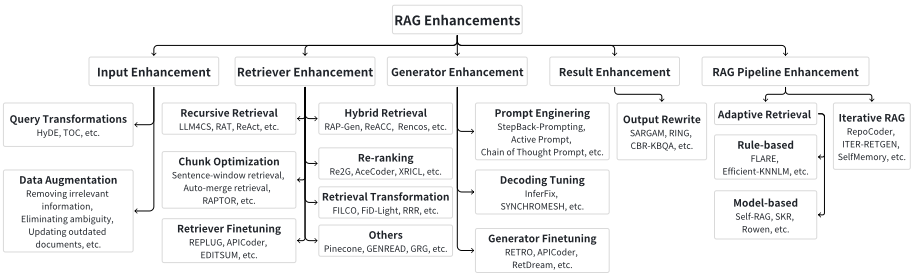
检索器微调（Retriever Finetuning）：检索器是 RAG 系统的核心，它依赖能力出色的嵌入模型 [139]-[142] 来表示相关内容并将其馈送给生成器，从而提升系统性能。
此外，具有强大表达能力的嵌入模型可以使用领域特定或任务相关的数据进行微调，以提升在目标领域的性能。REPLUG [86] 将 LM 视为黑盒，并根据最终结果更新检索器模型。APICoder [88] 使用 python 文件以及 api 名称、签名和描述来微调检索器。EDITSUM [98] 微调检索器以减小检索后各摘要之间的 jaccard 距离。SYNCHROMESH [81] 在损失中加入 AST 的树距离，并使用目标相似性调优（Target Similarity Tuning, TST）来微调检索器。R-ConvED [48] 使用与生成器相同的数据微调检索器。Kulkarni 等人 [143] 应用 infoNCE 损失来微调检索器。
混合检索（Hybrid Retrieval）：混合检索是指同时采用多种多样的检索方法，或从多个不同的来源提取信息。
RAP-Gen [144]、BlendedRAG [145] 和 ReACC [91] 同时使用稠密检索器（dense retriever）和稀疏检索器（sparse retriever）来提升检索质量。Rencos [80] 使用稀疏检索器在句法层面检索相似的代码片段，并使用稠密检索器在语义层面检索相似的代码片段。BASHEXPLAINER [99] 首先使用稠密检索器捕获语义信息，然后使用稀疏检索器获取词汇信息。RetDream [50] 首先使用文本进行检索，然后使用图像嵌入（image embedding）进行检索。CRAG [146] 的特色在于引入了一个检索评估器（retrieval evaluator），用于衡量文档与查询之间的相关性，并根据置信度触发三种检索响应：若结果准确，则直接将其用于知识精炼（Knowledge Refinement）；若结果不正确，则进行网络搜索（Web Search）；对于模糊的情况，则采用混合方法。Huang 等人 [147] 在检索阶段引入了 DKS（Dense Knowledge Similarity）和 RAC（Retriever as Answer Classifier）以评估答案相关性和知识适用性，从而改进了问答效果。UniMSRAG [148] 引入了一种新型的 token，称为"acting token"，该 token 决定了从哪个来源检索信息。Koley 等人 [149] 通过整合草图与文本实现细粒度检索，从而增强了图像检索，取得了更优的结果。
重排序（Re-ranking）：Rerank 技术是指对检索到的内容进行重新排序，以实现更大的多样性和
FILCO [159] 高效地清除检索文本中的无关内容，仅分离出相关的支持性内容，从而简化生成器的任务并有助于准确预测答案。FiD-Light [160] 首先使用编码器将检索到的内容转换为向量，然后对其进行压缩，从而大幅降低了延迟时间。RRR [161] 通过模板将当前查询与每一轮的 top-k 文档整合在一起，随后借助预训练的 LLM（如 GPT-3.5-Turbo 等）对其进行重构。
其他：除了上述优化方法之外，针对检索过程还存在一些其他的优化方法。
例如，元数据过滤（meta-data filtering）[162] 是一种辅助处理检索文档的方法，它利用元数据（如时间、目的等）对检索到的文档进行过滤，以获得更好的结果。GENREAD [163] 和 GRG [164] 提出了一种新颖的方法，即通过提示 LLM 针对给定问题生成文档，从而取代或改进检索过程。Multi-Head-RAG [165] 采用多个嵌入模型将同一文本块投影到不同的向量空间中，并利用多头注意力层捕获不同的信息侧面，从而提高检索过程的准确性。
8
3) 生成器增强：在 RAG 系统中，生成器的质量往往决定了最终输出结果的质量。因此，生成器的能力决定了整个 RAG 系统效果的上限。
提示工程：提示工程 [166] 中那些专注于提升 LLM 输出质量的技术，例如提示压缩、Stepback Prompt [167]、Active Prompt [168]、思维链（CoT）提示 [133] 等，均适用于 RAG 系统中的 LLM 生成器。
LLMLingua [169] 应用一个小型模型来压缩查询的整体长度，从而加速模型推理，减轻无关信息对模型的负面影响，并缓解“迷失在中间”（Lost in the Middle）现象 [170]。ReMoDiffuse [51] 利用 ChatGPT 将复杂描述分解为解剖学文本脚本。ASAP [171] 将由输入代码、函数定义、分析结果及相应注释组成的示例元组纳入提示中，以获得更好的结果。CEDAR [89] 使用专门设计的提示模板，将代码演示、查询和自然语言指令组织成一个提示。XRICL [153] 利用 CoT 技术，在跨语言语义解析与推理中添加翻译对作为中间步骤。ACTIVERAG [172] 采用 Cognition Nexus 机制来校准 LLM 的内在认知，并在答案生成中应用 CoT 提示。Make-An-Audio [44] 能够使用其他模态作为输入，从而为后续过程提供更加丰富的信息。
解码调优：解码调优是指通过微调超参数以增加多样性、约束输出词表等调整手段来增强对生成器的控制。
InferFix [90] 通过调整解码器中的温度（temperature）来平衡结果的多样性与质量。SYNCHROMESH [81] 通过实现一个补全引擎（completion engine）来限制解码器的输出词表，从而消除实现错误。
生成器微调：对生成器进行微调可以增强模型掌握更精确领域知识的能力，或使其与检索器更好地适配。
RETRO [36] 固定检索器的参数，并在生成器中使用分块交叉注意力（chunked cross attention）机制来融合查询与检索器的内容。APICoder [88] 使用结合了 API 信息与代码块的打乱新文件对生成器 CODEGEN-MONO 350M [173] 进行微调。CARE [117] 先用图像、音频以及视频-文本对训练编码器，随后微调解码器（生成器），以同时降低描述（caption）损失与概念检测损失，同时保持编码器和检索器固定。Animate-AStory [174] 先用图像数据优化视频生成器，然后微调一个 LoRA [175] 适配器，以捕捉给定角色的外观细节。RetDream [50] 使用渲染图像微调 LoRA 适配器 [175]。
4) 结果增强：在许多场景中，RAG 的结果可能无法达到预期效果，一些结果增强技术可以帮助缓解这一问题。输出重写：输出重写是指在特定场景下对生成器生成的内容进行重写，以满足下游任务的需求。SARGAM [176] 通过采用一个特殊的 Transformer 以及删除（Deletion）、占位符（Placeholder）和插入（Insertion）分类器来精炼代码相关任务的输出，使其更好地与现实世界的代码上下文对齐。Ring [177] 基于生成器产生的每个词元（token）对数概率的平均值对候选结果进行重排序，从而获得多样化的结果。CBRKBQA [54] 通过将生成的关系与知识图谱中查询实体局部邻域内所呈现的关系进行对齐来修正结果。
5) RAG 流水线增强：RAG 流水线增强是指对 RAG 的整体流程进行优化，以获得更好的性能结果。
自适应检索：一些关于 RAG 的研究表明，检索并不总是能提升最终结果。当模型固有的参数化知识足以回答相关问题时，过度检索可能导致资源浪费和潜在的混淆。因此，本章将深入探讨判断检索必要性的两种方法：基于规则的方法和基于模型的方法。
基于规则的：FLARE [178] 在生成过程中利用概率主动决定是否进行搜索以及何时进行搜索。Efficient-KNNLM [38] 通过超参数 λ 将 KNN-LM [37] 与 NPM [119] 的生成概率相结合，以确定生成与检索的比例。Mallen 等人 [179] 对问题进行统计分析，使高频问题能够直接得到回答，而对低频问题则应用 RAG。Jiang 等人 [180] 基于模型不确定性（Model Uncertainty）、输入不确定性（Input Uncertainty）和输入统计（Input Statistics）评估模型置信度，以指导检索决策。Kandpal 等人 [181] 研究了相关文档数量与模型知识掌握程度之间的相关性，以评估检索的必要性。
基于模型的：Self-RAG [85] 使用经过训练的生成器，在不同用户查询下基于检索标记（retrieve token）来判断是否执行检索。Ren 等人 [182] 使用“判断提示”（Judgment Prompting）来确定大语言模型（LLM）能否回答相关问题以及其答案是否正确，从而辅助判断检索的必要性。SKR [183] 利用 LLM 自身的能力预先判断其能否回答问题，若能回答则不执行检索。Rowen [184] 将问题翻译成多种语言，并检查这些语言之间答案的一致性，利用检查结果来判断是否需要进行信息检索。AdaptiveRAG [185] 通过一个分类器根据查询复杂度动态决定是否检索，该分类器是一个更小的语言模型（LM）。
迭代式 RAG：迭代式 RAG 通过反复循环检索与生成阶段来逐步优化结果，而非仅进行单轮处理。
RepoCoder [186] 采用迭代式的检索-生成方法进行代码补全，利用先前 Query-based Latent-based Logit-based Speculative Query+Latent Latent+Logit 生成的代码来优化查询，以更好地利用分散的信息并改善结果。ITER-RETGEN [187] 通过利用生成器的输出定位知识缺口、检索必要信息并为后续生成循环提供依据，从而迭代地提升内容质量。SelfMemory [188] 迭代地利用检索增强生成器来构建一个庞大的记忆池，记忆选择器从中挑选一个输出，用于指导下一轮生成循环。RAT [189] 首先由 LLM 通过零样本思维链（CoT）提示生成内容，随后通过从外部知识库检索知识来修订每个思考步骤。
9
| 0 |
|---|
| <!-- rich cell --> |
| 0 |
在本节中，我们聚焦于跨越多种模态的 RAG 应用。为呼应 RAG 基础与增强的分类体系，我们还在表 I 中展示了它们在不同任务上的应用。
首先，文本生成是 RAG 最重要且部署最广泛的应用之一。在此，我们分别介绍七项任务中的热门工作。
1) 问答（Question Answering）：问答是指从庞大而全面的文本资源集合中汲取信息，对所提出的问题给出回答的过程。FiD [35] 和 REALM [33] 基于查询识别出最相关的 top-k 个文章片段，并将每个片段与问题一同送入大语言模型（LLMs）以生成 k 个回答，随后将这些回答综合为最终答案。Toutanova 等人 [190] 用来自知识图谱的子图替换了 REALM 中的文本语料库，取得了令人瞩目的结果。如图 5 所示，RETRO [36] 采用注意力机制将问题与检索到的相关
流水线
文档在模型内部加以整合，从而产生最终答案。SKR [183] 观察到使用 RAG 并非总能使问答受益，因此探索了引导模型评估其对相关知识的掌握程度，进而调整其对外部资源的使用以实现检索增强。TOG [191] 提出了一种创新的知识图谱增强 LLM 框架，其通过促进 LLM 与知识图谱之间的交互，并借助 beam search 扩展推理路径空间而表现卓越。NPM [119] 率先采用非参数数据分布来替代 softmax 层，使参数更少的模型也能有效发挥作用。CL-ReLKT [192] 采用语言泛化编码器来弥合跨语言问题-文档对之间的鸿沟，从而更好地利用多语言数据。CORE [193] 通过引入一种新颖的稠密段落检索算法和多语言自回归生成模型，缓解了语言资源不均衡的问题。最后，EAE [113] 通过为查询实体检索实体嵌入，并将其与隐藏状态集成以作进一步处理，从而提升答案质量。UR-QA [194] 提出同时检索
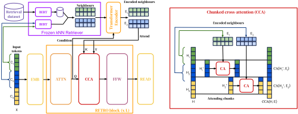
问答（QA）对与文本块，并通过比较二者经校准的置信度来选出最终答案。DISC-LawLLM [195] 通过法律三段论提示策略构建了监督微调数据集，使模型能够获得最新法律信息的支持。RAG-end2end [196] 对检索器（DPR）与生成器（BART）进行同步训练，以优化端到端问答任务的性能并促进领域自适应。MultiHop-RAG [197] 从不同文档中提取并聚合信息，为生成器提供必要的上下文，以便对查询给出明确的答案。
10
2) 事实核查（Fact Verification）：事实核查通常是指判断给定的自然语言文本及相关主张或断言是否与文本中的事实相符。
CONCRETE [198] 利用跨语言检索机制来挖掘丰富的多语言证据，有效弥合了事实核查数据集中代表性不足语言的资源缺口。Atlas [30] 表明，使用 RAG 在知识密集型任务中为大语言模型（LLM）提供支持，能显著提升其少样本学习性能。Hagström 等人 [199] 在 LLaMA [4] 和 Atlas [30] 上证明，搜索增强比增大模型规模更有利于解决不一致性问题。Stochastic RAG [200] 采用无放回随机抽样来应对 RAG 检索中不可微的 top-k 选择过程，实现了端到端优化，并在事实验证场景中取得了优异成果。
3) 常识推理：常识推理是指机器借助其所习得的外部知识及其应用，以类似人类的方式对问题或任务进行推断或决策的能力。
KG-BART [201] 通过纳入知识图谱中多样概念之间错综复杂的相互关系，拓展了概念空间。它采用图注意力机制，帮助 LLM 构建更细腻且逻辑连贯的句子。Wan 等人 [202] 构建了由争议性问题与相互冲突的答案组成的 CONFLICTINGQA 数据集，以研究文本特征如何影响语言模型（LM）对争议性问题的处理。
4) 人机对话：人机对话涵盖机器理解自然语言并娴熟运用这一技能与人类无缝交流的能力。
ConceptFlow [203] 利用常识知识图谱来组织对话结构，基于注意力分数引导对话流向，并推动对话向前发展。Cai 等人 [204] 通过检索并提炼过往对话历史的精髓，将文本生成任务重新构想为一项完形填空测试，取得了显著成效。Komeili 等人 [205] 利用先进的搜索引擎技术从互联网上获取相关内容，提升了对话生成质量。BlenderBot3 [206] 拓宽了搜索视野，不仅挖掘相关的互联网内容，还挖掘本地对话历史，并采用实体抽取等多种技术来改进生成对话的质量。Kim 等人 [207]、PARC [208] 和 CREAICL [209] 通过融入跨语言知识提升了非英语对话的水准，有效应对了非英语数据集稀缺的问题，并提高了生成对话的质量。CEG [210] 通过后处理机制解决幻觉问题，借助检索来验证 LLM 生成的答案。
5) 神经机器翻译：神经机器翻译（Neural Machine Translation, NMT）是将文本从源语言自动翻译为目标语言的过程 [118], [211], [212]。它是自然语言处理（NLP）领域的一项关键任务，也是人工智能（AI）追求进程中的一个重要目标，具有相当大的科学意义和实践意义。
Cai 等人 [211] 提出了一种创新方法，利用单语语料库并结合多语言学习技术，挑战了神经机器翻译中对双语语料库的传统依赖。kNN-MT [212] 通过计算向量空间距离，在 token 级别执行翻译任务。TRIME [118] 通过联合训练检索系统与生成模型，有效缩小了训练阶段与推理阶段之间的差异，从而提升了翻译的精确度。
6) 事件抽取：事件抽取是自然语言处理中的一项过程，涉及识别并归类文本中的特定事件，并将其与相关实体关联起来。这些事件通常由动词表示，而实体则是事件所涉及的参与者。R-GQA [213] 通过从仓库中识别并利用最为契合的问答（Question-Answer）对来增强给定问题的上下文，从而丰富了可用于处理当前查询的信息。
7) 摘要生成：摘要生成是一项旨在从冗长文本中提炼关键信息，并生成简洁、连贯且能概括主要主题的摘要的任务。摘要生成主要有两种方法：抽取式摘要和生成式摘要。
抽取式摘要是指直接从源文本中自动选择并汇编关键短语，它不创建新句子，而是复用原文中的片段。
生成式摘要则要求理解原文的含义并将其重新表述为新的句子 [96], [214]-[216]，这种方式能够更流畅地传达源文本的意图，但由于其复杂性，在实现方面带来了更大的挑战。RAMKG [214] 有效地利用了一个全面的英语语料库，以提升非英语场景下关键短语生成的性能。Unlimiformer [96] 通过检索并利用最相关的 top-k 隐藏状态，解决了基于 transformer 的模型的输入长度受限问题，从而扩展了模型处理更长输入的能力。RPRR [215] 采用 Retrieve-Plan-Retrieve-Read 方法来克服大语言模型（LLM）所面临的上下文窗口受限问题，利用检索到的信息为新兴事件生成高质量的维基百科文档。RIGHT [216] 选择在不同的数据集上使用不同类型的检索器来增强生成器。M-RAG [217] 通过将文档分割到多个数据库中并引入多智能体强化学习技术，显著提升了文本摘要的性能。
11
长期以来，代码相关任务一直采用检索与生成相互分离的方法。在检索方面，可以利用抽象语法树（AST）或文本编辑距离来识别相似的代码片段。在生成方面，则采用序列到序列（sequence-to-sequence）模型来生成代码或自然语言。近期的 RAG 研究将检索与生成两种技术相结合，以提升整体性能。
1) 代码生成：代码生成旨在将自然语言（NL）描述转换为代码实现。
基于查询的 RAG 是代码生成的一种常用方法。它利用检索到的信息为基于 Transformer 的生成模型构建提示（prompt），这些信息包括相似示例 [40]、[152]、[218]-[221]、相关 API 细节 [88]、[222]、文档 [42]、导入（imports）[223] 以及全局函数 [224]。SKCODER [225] 检索相关的代码片段以生成草图模板，用于最终的代码生成。RRGCode [226] 采用交叉编码器（cross-encoder）对检索结果进行排序。CODEAGENT [227] 设计了用于网络搜索、文档检索、程序生成和正确性测试的 Agent。ARKS [228] 引入迭代式 RAG 来重新表述查询并更新检索源。
基于 Logit 的 RAG 同样适用于代码生成。RECODE [79] 使用编辑距离检索 NL 描述及其配对的代码，然后从 AST 中提取 n-gram 动作子树。在基于长短期记忆网络（LSTM）的生成过程中，处理后的子树在每个解码步骤中通过 logit 加以利用。kNNTRANX [120] 使用 seq2tree 模型将 NL 转换为代码 AST。在每个解码步骤中，会在 AST 前缀数据存储中搜索隐藏状态以生成新的概率，随后通过置信度网络与 seq2tree 模型的输出进行合并。
ToolCoder [229] 生成包含特殊标记（token）的代码。当遇到这些标记时，ToolCoder 会执行在线搜索或离线检索，用 API 调用来填补空缺，这是推测式 RAG（speculative RAG）的一种特殊形式。
2) 代码摘要：代码摘要任务则反过来将代码转换为 NL 描述。
许多研究工作使用额外的编码器对检索结果进行处理，然后将其与后续的解码器相结合，这种方式类似于 Fusion-in-Decoder [35]。
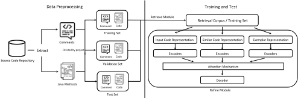
Re2Com [101] 和 EditSum [98] 使用 BM25 检索相似代码，并使用 LSTM 生成摘要。它们分别对输入、检索到的代码以及对应的摘要进行编码，然后在解码器中合并隐藏状态或 logit。HGNN [230] 则使用代码编辑距离进行检索，并用混合图神经网络（GNN）替代代码编码器
基于其代码属性图（CPG）[231]。RACE [102] 为输入代码差异、通过稠密检索得到的代码差异以及相应的提交信息分别采用独立的编码器，以生成最终的提交信息。BASHEXPLAINER [99] 采用稠密检索，并融合嵌入表示以供后续基于 Transformer 的解码器使用。READSUM [232] 使用 Levenshtein 距离进行检索，并采用融合网络来结合检索到的代码与摘要的表示。
基于查询的 RAG 在代码摘要生成中十分普遍。REDCODER [40]、ASAP [171] 和 SCCLLM [233] 都利用检索到的内容构建提示以进行摘要生成。它们分别采用稠密检索、稀疏检索和混合检索（包括语义、句法和基于词汇的检索）。该范式还被用于伪代码生成 [234] 和日志语句生成 [235]。
基于 Logit 的 RAG 在代码摘要生成中同样盛行。Rencos [80] 和 CoRec [236] 通过抽象语法树（AST）或稠密表示来检索相似的代码片段或代码差异。二者均对输入和检索结果采用多个长短期记忆网络（LSTM），并将概率组合起来用于最终生成。kNN-Transformer [237] 使用基于 Transformer 的生成器获取输入代码的上下文向量，然后组合来自向量检索、生成器以及针对输入中稀有词元的复制机制这三部分的 logit。Tram [238] 同样组合了三组 logit，分别来自原始生成器、针对句子级检索结果的生成器，以及词元级向量（表示源代码及其 AST）的检索 logit。CMR-Sum [239] 将检索到的摘要与生成的摘要之间的交叉注意力概率融入原始生成 logit 中。
3) 代码补全：代码补全类似于“下一句预测”任务的代码版本。
基于查询的 RAG 是代码补全的主流范式。Drain 等人 [240] 检索模板函数以完成函数补全。ReACC [91] 同时使用稀疏检索和稠密检索。RepoCoder [186] 通过用先前生成的代码扩充检索输入来执行迭代式 RAG。De-Hallucinator [241] 利用首次生成的内容检索 API 参考，然后执行基于查询的 RAG 以改进代码补全。REPOFUSE [242] 将推理依据上下文（rationale context）和检索到的代码纳入提示，并对各上下文进行排序以符合长度限制。
许多工作利用基于潜在表示的 RAG。Retrieve-and-edit [100]、RepoFusion [243] 和 EDITAS [244] 为检索到的内容或编辑序列采用多个编码器，然后将信息融合以供后续解码器使用。CoCoMic [245] 在整个代码
kNM-LM [246] 采用基于 logit 的 RAG，利用贝叶斯推断将检索与生成的 logits 相结合。
4) 自动程序修复：基于查询的 RAG 常被用于自动程序修复，以帮助生成模型修复有缺陷的代码。RING [177]、CEDAR [89] 和 RAP-Gen [144] 均采用混合检索（同时包括稀疏检索和稠密检索）来检索相似的错误信息、有缺陷的代码或修复方案，以构建提示。InferFix [90] 将缺陷类型、位置、相关语法层次结构以及相似的修复方案纳入提示中。SARGAM [176] 利用包含相似缺陷代码的提示来生成补丁；随后采用另一个模型对最终结果进行精炼。RTLFixer [247] 利用 ReAct [132] 实现了一个修复 Verilog 代码中错误的 Agent。该方法迭代地检索错误及其配对的解决方案，并将推理与动作规划融入面向 LLM 的提示中。
12
5) Text-to-SQL 与基于代码的语义解析：语义解析将自然语言（NL）转换为清晰的结构化表示，例如 SQL 或其他领域特定语言，通常借助代码来完成。所有采用 RAG 的相关工作都专门利用了其基于查询的变体。XRICL [153] 利用非英语话语来搜索并重排英语话语，然后构建提示以生成 SQL 查询。SYNCHROMESH [81] 检索相似的 NL 和 SQL 来构建提示，然后执行受约束的语义解码，以便在 SQL 生成过程中强制实施丰富的句法和语义约束。CodeICL [248] 使用 Python 进行语义解析，并利用 BM25 将相似的训练示例纳入提示中。RESDSQL [249] 将经过排序的模式（schema）纳入提示中，以生成 SQL 骨架和 SQL 查询。ReFSQL [250] 使用结合了模式关联（schema linking）与马氏（Mahalanobis）对比学习的结构增强检索器，这有助于实现更好的 text-to-SQL 生成。为了构建用于 SQL 生成的提示，ODIS [251] 同时检索域内（in-domain）和域外（out-of-domain）示例，而 Nan 等人 [252] 则同时检索了相似与多样的示例。MURRE [253] 对表格执行多跳检索-重写以生成表格化的问题，然后对结果进行排序以用于提示构建。CodeS [254] 以由粗到细的方式从表格数据库中检索相关信息来生成 SQL。
6) 其他：还有若干其他与代码相关的任务采用了基于查询的 RAG 范式，通过引入相似示例来构建提示。Jie 等人 [255] 将程序用作数值推理的中间步骤。De-fine [256] 使用程序来解决复杂任务，它对基于查询的 RAG 所生成的答案进行精炼，然后将精炼后的程序重新加入检索源。在程序静态分析方面，E&V [257] 利用 LLM Agent，借助基于 AST 的源代码检索、伪代码执行、执行规范验证等工具来形成中间结果。Code4UIE [258] 通过代码表示来执行信息抽取。StackSpotAI [259] 构建了一个带有 RAG 组件的 AI 编程助手。InputBlaster [260] 生成可能导致移动应用崩溃的异常文本输入。
2) Knowledge-augmented Open-domain Question Answering : Structured knowledge is often leveraged to augment ODQA (open-domain question answering).
Latent representation-based RAG, especially the fusion-indecoder [35] technique, is prevalent for knowledge-augmented ODQA. UniK-QA [108], KG-FiD [274], GRAPE [275] all apply the fusion-in-decoder technique. They incorporate tripletbased documents, re-ranked documents through KG, and bipartite graph for pairs of question and passage, respectively. OREOLM [276] empowers LLM with knowledge reasoning paths, integrating the entity value memory derived from contextualized random walk paths on KG into the hidden states of the LLM. SKURG [277] performs iterative retrieval and generation, using cross-attention to incorporate data sources into the input embedding. It uses a gate score to determine whether to re-start retrieval or to generate the real answer.
With the rapid development of LLMs, query-based RAG is emerging as a new standard. DIVKNOWQA [278] re-
13
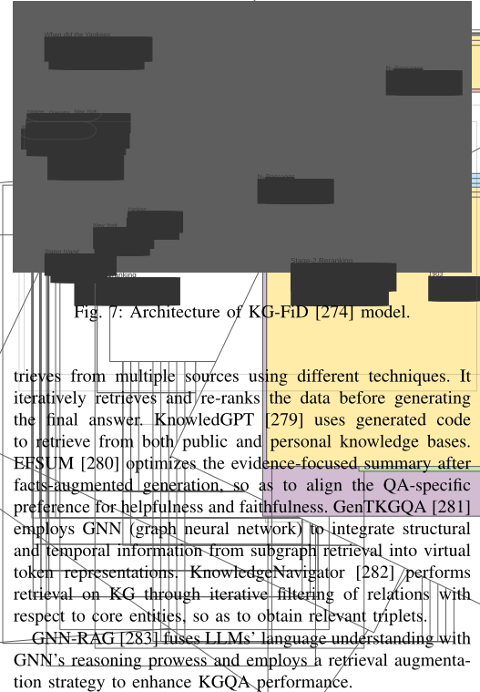
Fusion-in-decoder [35] style RAG is often used for table QA. EfficientQA [284], a competition held in NeurIPS 2020, witnessed the proposal of numerous retrieval-reader systems that rely on textual and tabular data. Dual Reader-Parser [285] and CORE [286] both re-rank the retrieved textual and tabular data for generation. Convinse [287] retrieves information from knowledge bases, tables, and texts after question understanding. RINK [288] designs a set-level reader-inherited re-ranker to get the relevance score of table segments. TAG-QA [289] retrieves tables and texts through GNN (after table-to-graph conversion) and BM25, respectively.
Tables can be integrated into prompts for query-based RAG. Both T-RAG [290] and OmniTab [291] concatenates the retrieved tables with the query to generate the answer. CARP [292] extracts hybrid chain of retrieved tables and passages for prompt construction. StructGPT [266] retrieves from multiple sources including KGs, tables, and databases. cTBLS [293] forms prompts with ranked tables after retrieval. Min et al. [294] integrated tabular data through table-totext techniques, then experiments on both finetuning and RAG. ERATTA [295] generates SQL code to extract table information, integrating it into the prompt to minimize model hallucination.
4) 其他：Prototype-KRG [296] 通过隐藏状态和 logits 将检索到的知识事实与对话原型整合到 GRU 模型中。SURGE [297] 将相关子图组合到用于对话生成的输入中。RHO [298] 在对话生成过程中将相关实体和关系的 KG 嵌入融合到文本嵌入中。K-LaMP [299] 检索历史查询中的实体以构建用于查询建议的提示。ReSKGC [112] 检索相关三元组，并使用 Fid 完成三元组补全。G-Retriever [300] 从文本图中检索节点和边以构建子图，并针对问答（QA）执行图提示调优。Hussien 等人 [301] 通过 RAG 技术将 KG 的推理能力与 LLM 的表达能力相融合。HippoRAG [302] 通过使用 KG 三元组模拟哺乳动物大脑的知识存储方式，并采用个性化 PageRank 算法进行检索，在多跳问答任务中表现出色。
1) 图像生成：图像生成是指创建新图像的过程，通常使用人工智能和机器学习领域的算法来实现。
检索过程不仅有助于在罕见甚至未见过的主体上也能生成高质量图像，还能减少参数量和计算开销 [45], [95], [103]- [107], [303]。对于基于生成对抗网络（GAN）的模型，RetrieveGAN [45] 使用可微检索器进行图像块选择，从而支持端到端训练。IC-GAN [95] 将数据建模为围绕每个训练实例的条件分布，使生成器和判别器均以这些实例为条件。
最近，扩散模型在图像生成方面超越了 GAN [304]。KNN-Diffusion [104] 和 RDM [105] 训练以 CLIP 嵌入和图像近邻为条件的扩散模型，从而能够对标签、提示进行事后条件化并实现零样本风格化 [106]。超越仅检索图像的范畴，Re-imagen [103] 将检索扩展到图文对以用于文本到图像生成，并通过交错引导来平衡提示与检索条件之间的对齐。Retrieve&Fuse [303] 通过在每个 U-Net 注意力块之前拼接检索到的图像与加噪图像，防止 CLIP 嵌入的信息丢失，从而允许通过自注意力实现充分交互。RPG [305] 检索代表性图像以构建上下文示例，并利用思维链（CoT）推理 [306] 为组合式文本到图像扩散规划出互补的子区域。
检索增强的图像描述生成通常利用一组检索到的描述来合成描述文本。MA [121] 通过记忆库进行增强，该记忆库由图文训练集的历史上下文和目标词构建，并在推理时以推理上下文进行查询。在对抗训练中，RAMP [307] 将检索到的描述作为判别器的参考，并采用记忆增强注意力和复制机制，以更好地利用检索到的描述。RA-Transformer [46] 和 EXTRA [308] 都是基于 Transformer 的检索增强描述生成模型，它们对编码后的检索描述使用交叉注意力。除描述检索之外，REVEAL [309] 统一编码并检索多模态世界知识，并将其与检索分数感知的注意力相集成。SMALLCAP [47] 则直接采用 CLIP 视觉编码器和 LLM 解码器，将检索到的描述作为针对特定输入的上下文示例。对于遥感图像，CRSR [310] 对检索到的描述进行精炼，过滤掉误导性细节并突出视觉上显著的内容。
14
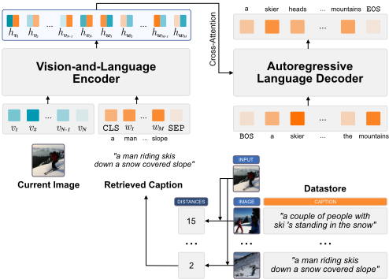
3) 其他：还有许多针对其他图像相关任务的检索增强工作。在视觉问答（VQA）方面，PICa [311] 将图像转换为文本描述，提示 GPT-3 并对多查询结果进行集成。RA-VQA [312] 通过可微检索实现端到端训练以生成答案。在视觉定位对话方面，KIF [313] 和 Maria [314] 利用视觉体验等外部知识增强对话生成。在多模态机器翻译方面，[315] 在短语级别融入视觉信息，利用多模态信息改进 NMT。
2) 视频问答与对话（Video QA&Dialogue）：视频问答与对话生成与视频内容相一致的单轮或多轮回复。对于 VideoQA，MA-DRNN [317] 利用外部记忆存储并检索查询和视频中的有用信息，从而对长期的视觉-文本依赖关系进行建模。R2A [318] 通过 CLIP 检索语义相似的文本，并将查询和检索到的文本一同作为提示输入大语言模型（LLM）。在视频对话方面，[319] 提出了 TVQA+ 数据集，以实现相关时刻和视觉概念的检索，并设计了相应的时空感知生成器。VGNMN [320] 从视频中提取视觉线索，而其检索过程则由先前对话中的实体和动作进行参数化。
3) 其他：RAG 也适用于其他与视频相关的任务。VidIL [321] 将视频内容转换为具有时间感知能力的 LLM 提示，用于视频描述、问答和未来事件预测等任务。对于可信的自动
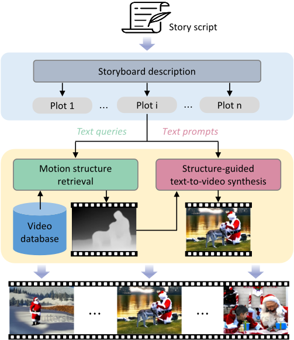
驾驶，RAG-Driver [322] 将多模态大语言模型（MLLM）建立在检索到的专家演示之上，以生成驾驶动作解释。Animate-A-Story [174] 通过将文本到视频生成划分为基于情节的视频增强和以文本与视频输入为条件的视频扩散生成，从而简化了文本到视频生成。
1) 音频生成：音频生成通常使用自然语言提示来合成音频。给定输入提示，
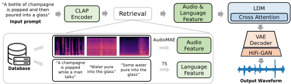
Re-AudioLDM [116] 使用稠密检索器 CLAP [26] 检索相关的描述-音频对以用于生成。Make-AnAudio [44] 根据文本提示检索音频，然后为文本到音频扩散模型的训练构建伪提示。
2) 音频描述：音频描述本质上是一种序列到序列任务，为音频数据生成自然语言数据。RECAP [323] 和 [43] 分别利用稠密检索器 CLAP [26] 和 VGGish [69]，在给定音频数据的情况下检索相关描述。对于 RECAP，描述被纳入 LLM 提示中，而 [43] 则在注意力模块中同时使用音频和检索到的描述。其他研究将音频模态与文本对齐，以利用 LLM [324]-[326] 的进展来实现各种下游文本生成。
1) 文本到3D（Text-to-3D）：检索可用于增强3D资产生成。
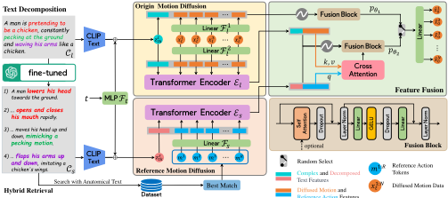
参考文献 操作 特征
ReMoDiffuse [51] 检索相关的动作实体，并利用扩散模型生成动作，同时采用语义调制注意力和条件混合引导。AMD [115] 设计并融合了两个动作扩散模型。其中一个分支以原始提示为条件，另一个分支则将提示分解为解剖学脚本并检索相似的动作。RetDream [50] 检索3D资产，以增强2D扩散模型的变分分数蒸馏 [327]。这些资产提供了几何先验和经过适配的2D先验，不仅在初始化时为粒子施加额外的速度，还有助于通过 LoRA 优化2D扩散模型。
RAG has also emerged as a promising research direction for many interdisciplinary applications, such as molecular
generation, medical tasks and computational research.
:
The goal of drug discovery is to
generate molecules that concurrently fulfill diverse properties.
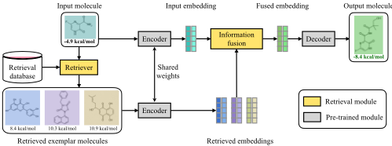
RetMol [55] integrates a lightweight retrieval mechanism and molecular strings into a pre-trained encoder-decoder generative model to retrieve and fuse exemplar molecules with the input. PromptDiff [328] introduces an interaction-based, retrieval-augmented 3D molecular diffusion model that retrieves a curated set of ligand references to guide the synthesis of ligands meeting specific design criteria.
2) Biomedical Informatics Enhancement : Several recent studies have improved the expressiveness of LLM by retrieving information from biomedical domain-specific databases, thereby augmenting the model's capabilities to provide valuable guidance for tasks in the medical field.
PoET [329] is an autoregressive model using a transformer variant with a retrieval mechanism for prompt augmentation, speeding up the prediction of protein variant fitness properties. Chat-Orthopedist [94] enhances ChatGPT with a retrieval-augmented mechanism focused on adolescent idiopathic scoliosis (AIS), utilizing an external knowledge base for precise responses. BIOREADER [330] is the first retrievalenhanced text-to-text transformer-based model for biomedical natural language processing, incorporating the retrieved literature evidence into the model using a chunked-cross attention mechanism. MedWriter [331] employs a hierarchical retrievalaugmented generation method that combines report-level and sentence-level templates to produce coherent and clinically accurate medical reports from images. QA-RAG [332] employs a dual-track RAG strategy to enhance pharmaceutical compliance by effectively retrieving and integrating regulatory guidelines based on language model responses and user queries. RAG-RLRC-LaySum [333] leverages biomedical text knowledge for llms, employing reinforcement learning and re-ranking techniques to enhance content relevance and readability of the output.
LeanDojo [334] boosts theorem proving by using retrievalaugmented methods to choose relevant premises from extensive mathematical libraries, improving automation and theorem generalization. RAG-for-math-QA [335] improves math question-answering by integrating a high-quality math textbook with RAG, enhancing LLM-generated responses for middle-school algebra and geometry.
鉴于 RAG 的研究兴趣和应用日益增长，也出现了若干从特定方面评估 RAG 的基准测试（benchmark）。
Chen 等人 [336] 提出了一个从四个维度进行评估的 RAG benchmark：（1）噪声鲁棒性（Noise Robustness），测试大语言模型（LLM）能否从含噪文档中提取必要信息；（2）负向拒绝（Negative Rejection），评估 LLM 在检索内容不足时能否拒绝回答；（3）信息整合（Information Integration），检查 LLM 能否通过整合多条检索内容来获取知识并作出回答；（4）反事实鲁棒性（Counterfactual Robustness），判断 LLM 能否识别检索内容中的反事实错误。
另外三个 benchmark——RAGAS [337]、ARES [338] 和 TruLens [339]——使用一个独立的评估器 LLM 从三个方面进行评估：（1）忠实性（Faithfulness），基于检索内容评估事实准确性；（2）答案相关性（Answer Relevance），判断结果是否回应了查询；（3）上下文相关性（Context Relevance），评估检索内容的相关性及其简洁性。
16
CRUD-RAG [340] 将 RAG 任务划分为四种类型：创建（Create）、读取（Read）、更新（Update）和删除（Delete），并通过文本续写、问答、幻觉纠正和开放域多文档摘要对其进行评估。MIRAGE [341] 评估 RAG 在医疗领域的表现，重点关注医疗问答系统的性能。KILT [342] 通过对齐 Wikipedia 快照来验证信息准确性，使用 BLEU 分数精确定位相关文本，并通过过滤来保证质量，从而为有证据支持的预测或引用提供多样化的检索系统。
尽管 RAG 得到了广泛采用，但其本质上存在若干局限性。
5) 冗长上下文：RAG 的主要缺点之一，尤其是基于查询的 RAG，在于它会极大地延长上下文，使得对于上下文长度有限的生成器而言并不可行。此外，延长的上下文通常也会减慢生成过程。提示压缩 [169] 和长上下文支持 [349] 方面的研究进展已在一定程度上缓解了这些挑战，尽管在准确性或成本方面存在轻微的权衡。
最后，我们希望概述未来 RAG 研究与应用的若干潜在方向。
1) 增强方法学的全新设计：现有研究已经探索了检索器与生成器之间的多种交互模式。然而，由于这两个组件的目标各不相同，实际的增强过程会对最终生成结果产生显著影响。对更先进的增强基础加以研究，有望充分释放 RAG 的潜力。
17
算法设计。值得注意的是，近期出现了一种观点，即“像 Gemini 1.5 这样的长上下文模型将取代 RAG”。尽管如此，这一论断忽视了 RAG 在管理动态信息方面的灵活性，这类信息既包括最新知识，也包括长尾知识 [353]。我们期望 RAG 能够从长上下文生成中获益，而不是被其取代。
本文在 AIGC 的背景下对 RAG 进行了全面而深入的综述，重点关注增强基础、增强方法与应用。我们首先系统性地梳理并总结了 RAG 中的基础范式，为检索器与生成器之间的交互提供了深入见解。随后，我们回顾了进一步提升 RAG 有效性的各类增强方法，包括针对各个组件或整个流程的增强。为了帮助不同领域的研究者，我们展示了 RAG 在一系列模态与任务中的实际应用。最后，我们还介绍了 RAG 现有的基准测试（benchmark），讨论了 RAG 目前的局限性，并指明了富有前景的未来研究方向。